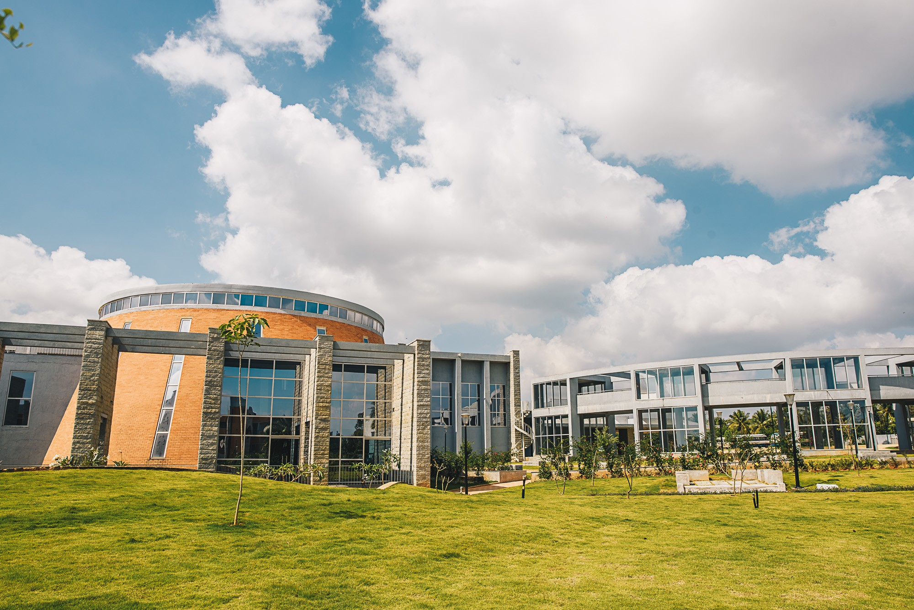
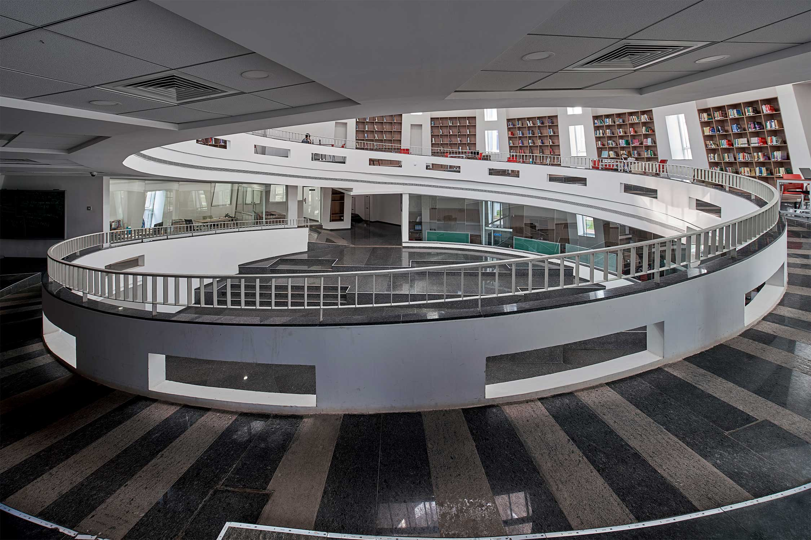
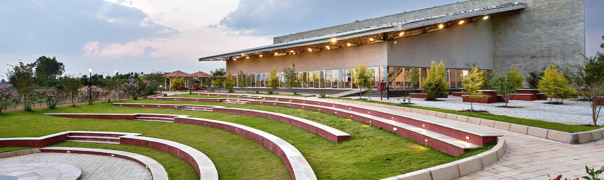
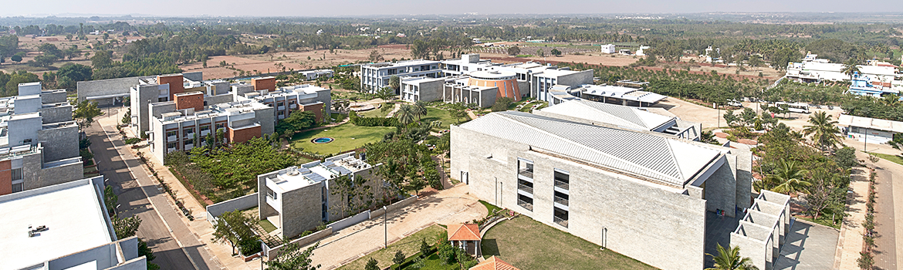

ICTS S. N. Bhatt Fellowship 2027: who can apply and the updated master's rule
A summer research placement is useful when you already know the subject you want to explore. The International Centre for Theoretical Sciences (ICTS-TIFR), Bengaluru, is inviting applications for its S. N. Bhatt Memorial Excellence Fellowship Program 2027. Eligible science, mathematics and engineering students can apply online by 15 December 2026 at 5:00 PM IST. The separate deadline for referees is 31 December 2026 at 5:00 PM IST.
Master's applicants: read the updated rule first
The institute's clarification dated 29 October 2026 replaces the broader sentence welcoming master's students and people who have completed undergraduate study. The corrected wording welcomes master's degree students who are not in their final year by May 2027. Do not rely on the older sentence alone. This is not an invitation to every master's student or every graduate.
Who can apply
- Undergraduate students in science, mathematics and engineering who will have finished their third or fourth year by May 2027.
- Exceptional undergraduates who will have finished their second year by May 2027 may also apply.
- Master's degree students who are not in their final year by May 2027, under the dated clarification.
Applications are invited from Indian and foreign nationals. These are academic-stage rules, not a general scholarship for all school or college students. If your integrated degree, completed-degree status or academic calendar makes the category unclear, ask ICTS before applying. The checked announcement does not give a universal percentage or CGPA threshold, age limit or guaranteed selection formula. Do not import one from an unrelated fellowship.
What the fellowship offers
The programme lets selected undergraduate and master's students work with ICTS faculty and post-doctoral fellows on research. The institute says it typically runs in summer, around the middle of May to the middle of July. Those are typical timing descriptions, not confirmed arrival and departure dates for every selected fellow in 2027.
Selected candidates receive a stipend and accommodation during the programme. The checked call does not state the stipend amount, its payment schedule, travel reimbursement, meals or every incidental cost. A place is not an all-expenses-paid promise. Confirm the offer's dates, accommodation arrangements, payments and any travel or living expenses before making bookings.
ICTS campus and library
Four photographs from ICTS's own website, showing the institute and its library. These are campus reference photos, not photographs of the 2027 fellowship cohort. They do not establish a particular room or facility allocation for a selected applicant.




Research areas
The call groups its research areas into two sets. Choose based on a genuine academic interest, rather than treating the fellowship as a generic technology course.
Physical and natural sciences
- Astrophysics and relativity.
- Biological physics.
- Statistical physics and condensed matter.
- Fluid dynamics and turbulence.
- String theory and quantum gravity.
Mathematical sciences
- Applied and computational mathematics.
- Computer science.
- Algebra, geometry and physical mathematics.
- Probability theory.
These are the areas named in the current call. Listing a subject here does not promise a place with a particular supervisor or a project of your choice.
Dates to keep separate
- Your application: 15 December 2026, 5:00 PM IST.
- Referees: 31 December 2026, 5:00 PM IST.
- Review: the institute says applications will be reviewed in January, with results declared in February.
The later referee deadline does not extend your own application deadline. Ask potential referees early and give them the correct programme name and date. A referee agreeing to help is not the same as the required recommendation being received.
Prepare before starting
The official call asks applicants to apply online with a CV, academic details and details of at least two referees. Prepare an accurate account of your studies and interests and ask suitable referees for permission to list them. These preparation suggestions do not add extra official eligibility conditions.
The initial public form we inspected asks for first name, last name, email ID and an arithmetic anti-spam question. We did not enter applicant details or submit that first stage. Later fields, document formats, upload sizes, referee messages and the final confirmation were not checked. Read those requirements in the actual form rather than assuming a file specification from another programme.
Online application route
- Read the official programme page and its dated master's clarification.
- Confirm your degree subject and the year you will have completed by May 2027. Ask ICTS if your category remains unclear.
- Prepare your CV, academic information and at least two referee contacts.
- Open the official 2027 application start. Check that the heading names the S. N. Bhatt Memorial Excellence Fellowship Program 2027.
- Enter your own truthful details, follow the current form and review all declarations and uploads before submitting by the applicant deadline.
- Keep the acknowledgement or application reference supplied by the portal and follow its referee instructions. Do not assume that reaching the first page means an application has been filed.
The institute prefers online applications and says online applicants should not send hard copies. No application fee is stated in the checked public call; this is not a verification of every later form stage or expense.
If you cannot apply online
The announcement offers an offline route for people without internet access. However, its text says the deadline applies to both modes while a separate postal paragraph mentions receipt by 21 December 2026. We have not reconciled those instructions. This guide therefore does not advertise a later postal deadline. Contact the programme for its current written instructions before relying on offline submission.
Contact, privacy and checks
For programme questions, use summer.program@icts.res.in, the email supplied in the call. Use the institute's official application host for personal information and documents. Do not send records to unofficial agents or pay someone promising selection. Ask referees before sharing their contact details.
AiCoN checked the two official programme pages, the official poster and the public application-start form on 21 November 2026. We did not submit an application, test a recommendation request or inspect later personal-data stages. No current English or Malayalam video walkthrough was verified for this specific 2027 application. The institute's written instructions are the source for decisions.
Official sources: 2027 opportunity notice, programme and eligibility clarification, application start, and official poster. AiCoN explainer, not an ICTS publication.